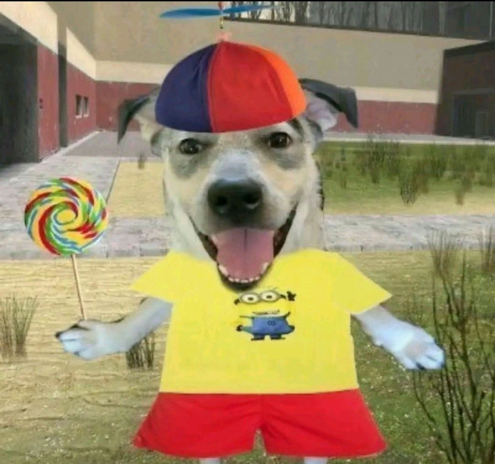
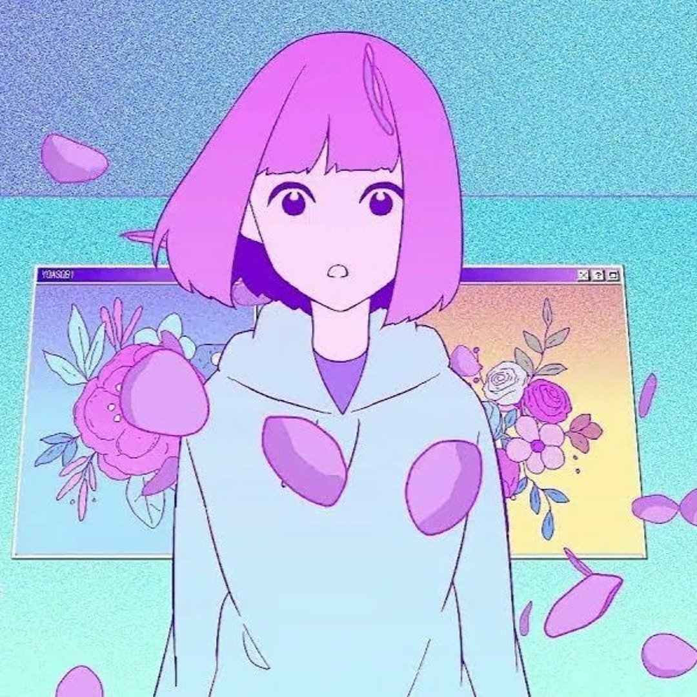
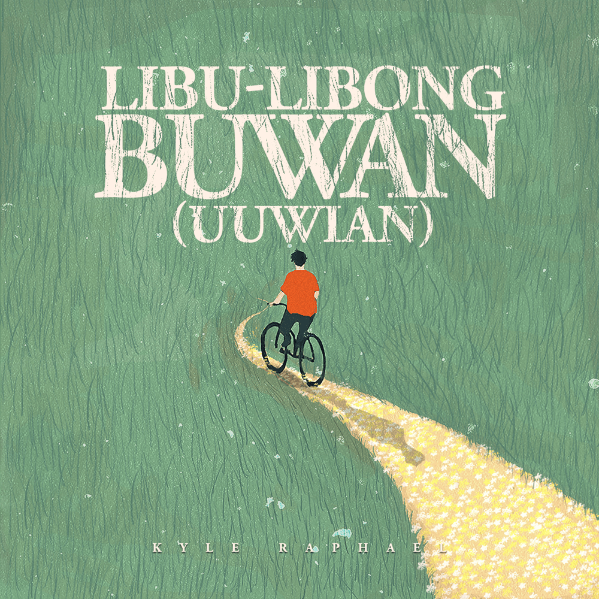
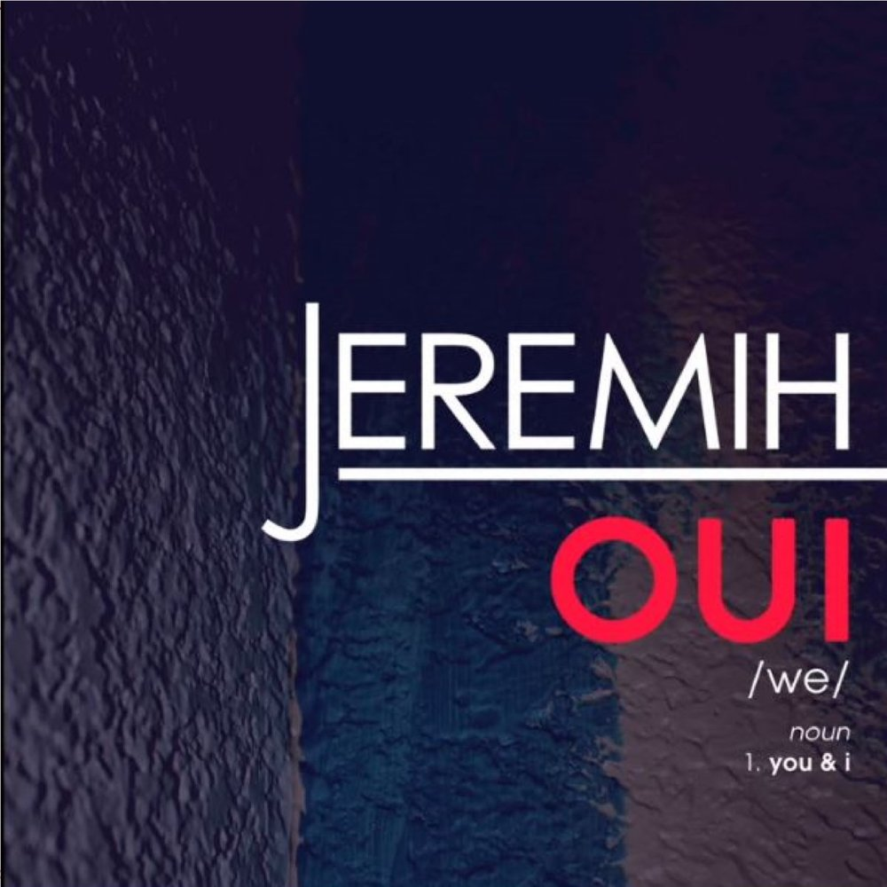

I am a person who lives in a small town and enjoys spending time with my family and friends. I am passionate about technology and I am always eager to learn new things.
I am a student at the University of the Mindanao - Main Campus. I am currently taking up Bachelor of Science in Information Technology. I am a hardworking and dedicated individual who is always willing to learn new things. I am also a team player and I am always willing to help others. I am looking for an opportunity to gain experience and to further develop my skills in the field of Information Technology.
The reason why I love playing video games is because they help me relax and unwind after a long day in class.
The reason why I love working out is because it helps me stay fit and healthy. It also builds my confidence.
The reason why I love listening to music is because it helps me relax and focus.
The reason why I love walking outdoors is because it helps me clear my mind and enjoy nature.

The story it's based on is about a protagonist who got dumped and is in a funk, but eventually begins to
pursue a dream.
So I wanted to express the way they face forward and start to move on up. The story had a lot of indoor
scenes, so I linked the image of emerging from that room with the sense of taking a new step forward
towards
one's dream.
-Ayase

This song is about promising that no matter how chaotic the world gets or how much you argue, that person will always be your safe space and the home you return to.

“Oui” is French for “yes"—in Jeremih’s ode to romantic devotion, he makes a pun based on the word’s English language homophone, "we.” In order to have “we"—a couple—you need two people, or "you” and “I.” And to spell the word “oui,” you also need a “u” and “i.”